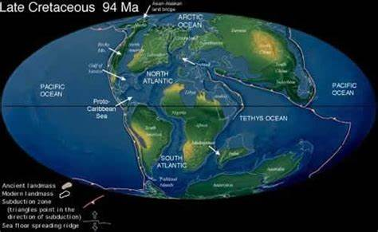
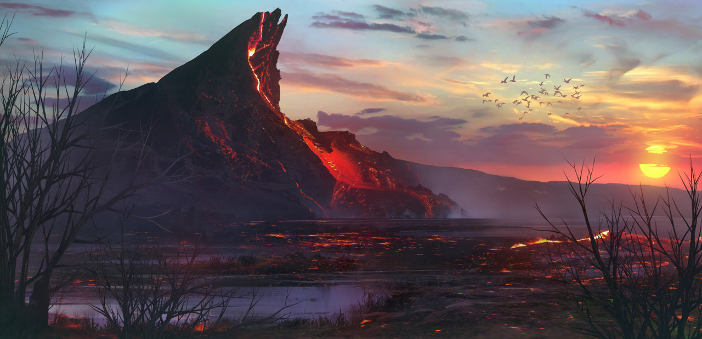
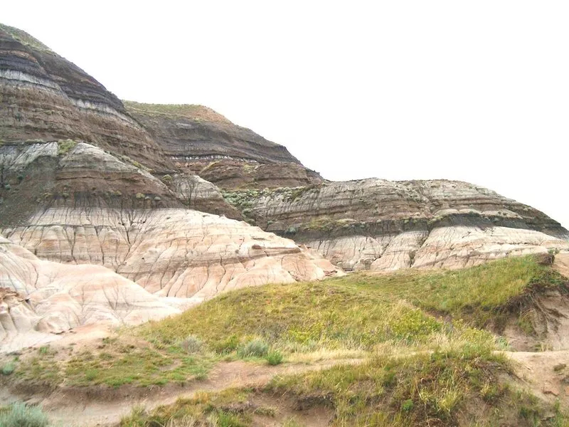
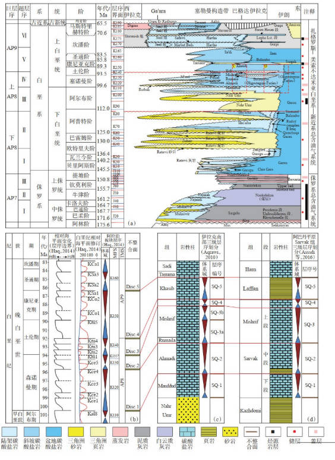

重大地质事件
板块运动、火山活动与海洋变迁共同塑造了白垩纪的地球面貌

大陆分裂与漂移
1.45亿-6600万年前
泛大陆解体为南北两大块，南美洲与非洲分离，印度板块开始北向漂移，奠定现代大陆格局。
板块构造
大规模海侵与海退
1.4亿-6600万年前
全球海平面上升，特提斯洋扩张，淹没大片陆地，形成广泛的浅海沉积。末期发生全球性海退，陆地面积扩大。
海洋变迁

火山活动与构造运动
贯穿白垩纪
环太平洋火山带剧烈活动，形成大规模岩浆岩。海底火山喷发增加大气二氧化碳浓度，影响全球气候。
火山作用
大洋缺氧事件
多次发生
海洋中氧气含量急剧下降，形成黑色页岩沉积，导致大量海洋生物灭绝，同时促进石油和天然气形成。
海洋化学

白垩纪-古近纪界线
6600万年前
小行星撞击地球，引发全球灾难，导致恐龙等约75%的物种灭绝，标志中生代结束和新生代开始。
灭绝事件

白垩纪沉积
广泛分布
形成大量白垩沉积，如欧洲的多佛白崖。同时生成重要矿产资源，包括石油、天然气和磷矿。
沉积矿产